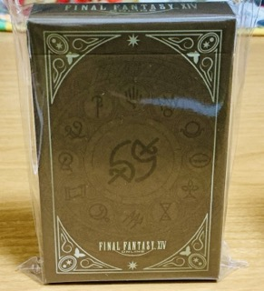
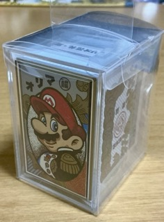
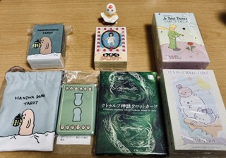
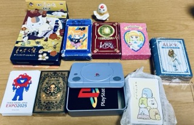

🃏 トランプ
FF14＜ミソロジー・オブ・エオルゼア＞トランプ
全体運のリーディングに使用。FF14を知らないと理解し辛いトランプ。私は現役プレイヤーです。
リーディングで共に歩む相棒の札たち
今月の12星座運勢では、こちらの3種類のデッキを使用しています。

全体運のリーディングに使用。FF14を知らないと理解し辛いトランプ。私は現役プレイヤーです。

恋愛・対人運のリーディングに使用。たまに知らないキャラもいるけど可愛いからOK。

健康運のリーディングに使用。「花札占い」は、実在します。賭博だけではありません。

気分に合わせて登場するタロットのデッキたちです。

タロットより読みやすいので好きなトランプのデッキたちです。

花札は日本の四季（1月〜12月）を描いているので便利です。